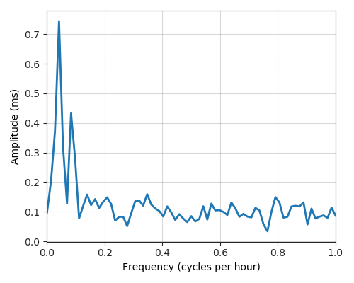

---
layout: default
title: Last-mile delay survey / 2018-03-01 / AS6327
---
AS6327, SHAW, CA
Summary
- Daily last-mile fluctuations: low
- Number of probes: 11
- APNIC eyeball rank: 157
- Daily fluctuations: True
- Main frequency: 0.0417
- Average peak-to-peak amplitude: 0.74ms
Aggregated last-mile queuing delay
Periodogram

24H profile
Probes' last-mile RTT